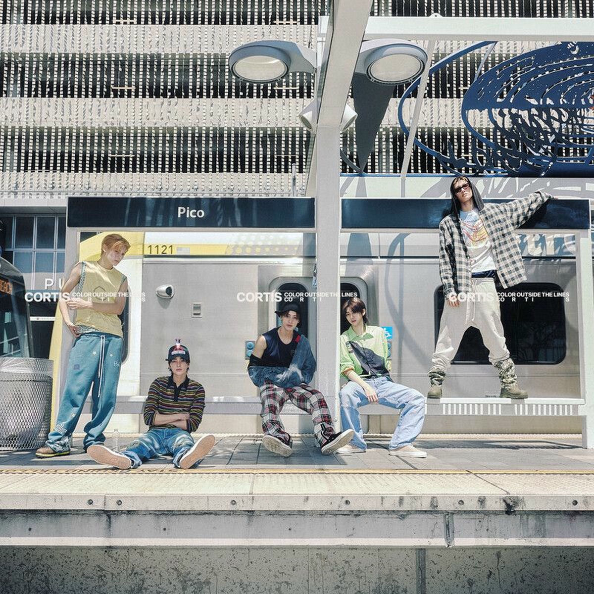

this is the text that goes under the title
Moonwalkin' - LNGSHOT
Genre(s) - R&B, Hip-Hop, K-pop
I would recommend this song because it has a modern take on traditional K-pop, and for the vocals in the song

What You Want - CORTIS
Genre(s) - R&B, Psychedelic Rock, K-pop
I would recommend this song because it has a slight rock feel, but the melody is a lot slower
Facetime - LNGSHOT
Genre(s) - R&B, K-pop
I would recommend this song because of it's vocals and the lyrics